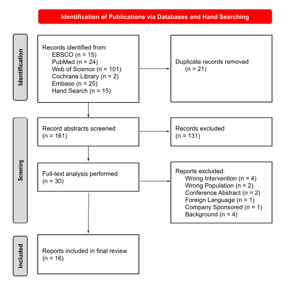

Figure 1. PRISMA 2020 flow diagram. Records were identified through six electronic databases (EBSCO, PubMed, Web of Science, Cochrane Library, Embase) and hand searching. Following duplicate removal and two-stage screening, 16 reports were included in the final review.
- 15 EBSCO
- 24 PubMed
- 101 Web of Science
- 2 Cochrane Library
- 25 Embase
- 15 Hand Search
| Reason for Exclusion | n | Notes |
|---|---|---|
| Wrong Intervention | 4 | Studies not involving an external sternal support device as the primary intervention; included general sternal precautions or rehabilitation protocols only. |
| Wrong Population | 2 | Studies limited to chronic sternal instability populations rather than acute post-sternotomy patients, or non-cardiac surgical populations. |
| Conference Abstract | 2 | Insufficient methodological detail available for critical appraisal; full publications not identified. |
| Foreign Language | 1 | Full text not available in English; translation not feasible within scope of review. |
| Company Sponsored | 1 | Study identified as wholly industry-funded with high risk of bias; excluded from primary synthesis (noted as methodological concern in critical appraisal commentary). |
| Background / Non-Primary | 4 | Narrative reviews, editorials, or background literature not meeting criteria for primary study or formal inclusion in this literature review with critical appraisal. |
The final included set of 16 reports spans randomized controlled trials, controlled observational studies, systematic reviews, meta-analyses, and formal practice guidelines. Several included studies carry identified limitations that are explicitly noted throughout the synthesis: Hjorth (2014) — company sponsored; El-Ansary (2008, 2015) — chronic instability or wrong population; Katijjahbe (2018) — no sternal binders used in the intervention arm. These studies are retained in the review but are flagged in all evidence tables and the visual outcome matrix with methodological overlay indicators.